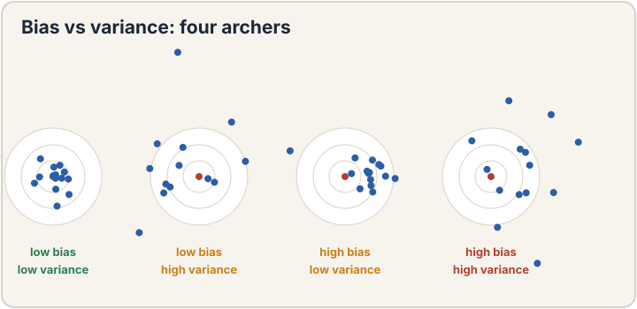
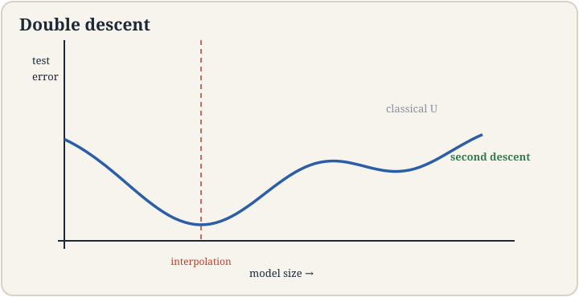
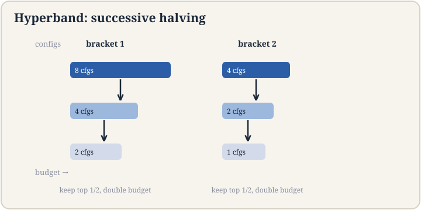

Lecture 6: Bias, Variance, and Picking Models
Video blocked (ad-blocker or local file mode).
Watch on YouTubeVideo not loading? Watch on YouTube
Original lecture. Chris Ré covers bias and variance, double descent, data splits, and Hyperband.
The job: a model that works on houses it has never seen
You fit a line through the Ames houses. The loss on your spreadsheet is tiny. You deploy it, and on new listings it is terrible. What happened? The line memorized your spreadsheet’s quirks instead of learning the market. This gap, between performance on the data you trained on and performance on new data, is the central drama of machine learning. Overfitting is its name: the model fits the training data’s noise, not its signal.
First attempt: fit harder
The naive response to bad predictions is a more flexible model. The line misses curved patterns, so fit a degree-10 polynomial: 11 knobs instead of 2. Watch it on a toy. The true market is a gentle curve. You have 12 noisy sales. The degree-10 polynomial threads every point exactly. Training loss: zero. Then a new house arrives between two training points, where the polynomial whipsaws wildly to hit its neighbors. Prediction error: enormous.
Demonstrate the failure with numbers. True price curve: y = x^2, x from 0 to 2. Twelve training points with noise of plus or minus 0.3. The degree-10 fit has training error 0.00. On 100 fresh test points, its average squared error is 4.7. The humble line y = 0.5x + 0.3 has training error 0.42 and test error 0.51. The flexible model wins training 0.00 to 0.42 and loses the real game 4.7 to 0.51. Fitting harder made predictions worse. That is overfitting, measured.
Bias and variance: the two enemies
Bias is error from wrong assumptions. The line assumes the world is straight. On a curved market it is systematically off. High bias means the model cannot capture the pattern even with infinite data. Variance is error from sensitivity to the training sample. The degree-10 polynomial swings wildly when you swap in a different 12 houses. High variance means the model learned the noise.
The expected test error splits into three parts: bias squared, plus variance, plus irreducible noise (the market’s own randomness, which no model removes). Simple models: high bias, low variance. Flexible models: low bias, high variance. The classic picture is a U-curve: test error falls as flexibility fixes bias, then rises as variance takes over. The bottom of the U is the model you want.

Where the canon breaks: double descent
For decades the U-curve was the whole story. Then neural networks broke it. The lecture presents double descent: keep adding parameters past the point where the model fits training data perfectly, and test error does something the canon forbids.
The curve: test error descends (bias falling), ascends to a peak (variance exploding near the interpolation threshold, where parameters roughly equal data points and the fit becomes knife-edge sensitive), then descends again. In the overparameterized regime the optimizer, among the many zero-training-loss solutions, finds a smooth one that generalizes. The lecture’s image: a massively overparameterized polynomial, given enough data and regularization, finds the zero-loss solution that generalizes. “A wild statement, but it turns out to be true in neural nets.”
Numbers make it concrete. On CIFAR-10 style tasks, test error at the classical sweet spot might be 15 percent, spike to 25 percent at the interpolation peak, then fall to 8 percent with ten times more parameters. The second descent is why modern models are enormous: past the peak, bigger keeps helping. The canon is not wrong, it is incomplete: it describes the left of the peak.

The key question
Bias and variance describe the tradeoff. But how do you measure which regime you are in without peeking at the future? You cannot evaluate on the training data (the polynomial scored 0.00 there and lied). You need fresh data whose answers you know but the model has never seen.
Train, dev, test: the discipline
Split the data into three parts. The training set fits the knobs. The dev set (validation set) measures and compares models: try the line, the degree-3 polynomial, the degree-10, pick the dev winner. The test set is touched once, at the very end, to report honest performance.
Why three and not two? Because picking the model on the dev set adapts to the dev set. Tune 100 models on dev and the winner is partly lucky on dev. The test set stays clean because you never decide anything with it. The lecture’s warning: every decision made on a dataset contaminates it. The test set is the one dataset you decide nothing with.
When data is scarce, cross-validation reuses it honestly: split into k folds, train on k-1, validate on the held-out fold, rotate, average. With k = 5, every example validates exactly once and trains four times. It costs k training runs and buys an honest estimate from small data.
Ridge: pay for big knobs
Back to the polynomial that whipsawed. Its disease is huge coefficients: to thread 12 noisy points with a degree-10 curve, some knobs must be enormous, and enormous knobs mean violent swings between points. Ridge regression attacks this directly: minimize the usual squared loss plus a penalty on knob size.
J_ridge(theta) = sum (h - y)^2 + rho * sum theta_j^2
Rho is the new dial: how much big knobs cost. At rho = 0 you get the whipsawing polynomial. As rho grows, the knobs shrink, the curve calms, variance falls, bias rises. The lecture derives the closed form: theta = (X^T X + rhoI)^-1 X^T y. Two dividends. First, the penalty fixes the singular-matrix failure of lecture 2: X^T X + rhoI is always invertible for rho > 0. Second, in the underdetermined case (fewer houses than knobs, n < d), infinitely many knob settings fit the training data exactly. Ridge picks the smallest one, the calmest fit.
Work the toy. Degree-10 polynomial on the 12 noisy points. Rho = 0: test error 4.7. Rho = 1: the wild coefficients shrink tenfold, test error 0.9. Rho = 100: the curve goes nearly flat, test error 2.1 (bias now dominates). The U returns, this time with rho on the axis instead of flexibility. The lecture’s intuition: “we know theta is not too big. If we make it really big, it has got to be worth it by fitting the data a lot better.”
Hyperband: stop wasting compute on losers
Rho is a hyperparameter: a dial you set before training, not a knob the training fits. Learning rate, polynomial degree, network width are hyperparameters too. Tuning them by trying every combination to completion wastes compute: most candidates are obviously bad after a few minutes.
Hyperband is successive halving with smart budgets. The idea: start many configurations with a small training budget each, keep the best half, double their budget, repeat. A concrete schedule: 81 configs get 1 unit of training each. The best 27 get 3 units. The best 9 get 9 units. The best 3 get 27 units. Total cost is about the same as training a handful of configs fully, but you explored 81. Bad ideas die cheap. Good ideas earn compute. The lecture presents it as the disciplined answer to hyperparameter search: never spend a full training run on a config that already looks bad.

The honest price
Every tool here charges. The train/dev/test split costs data: a test set of 10,000 examples is 10,000 examples the model never trains on. Cross-validation costs compute: k folds mean k training runs. Ridge costs bias: shrink the knobs and you deliberately underfit a little to overfit a lot less. Rho itself must be tuned on dev. Hyperband costs the chance that a slow starter, a config that looks bad early and would have won late, gets killed in round one. And double descent charges humility: past the interpolation peak, the classical advice “smaller is safer” is wrong, and the honest practitioner checks which side of the peak they are on before preaching simplicity.
Mapping back
| Idea | Pain it answers | How |
|---|---|---|
| Bias-variance split | “Fit harder” backfired: 0.00 train, 4.7 test | Names the two enemies: wrong assumptions (bias) vs noise sensitivity (variance); U-curve locates the sweet spot |
| Double descent | The U-curve said big models must fail; they do not | Past the interpolation peak, optimizers find smooth zero-loss solutions; test error descends again |
| Train/dev/test | Training error lies (0.00) | Dev picks the model, test reports honestly once; cross-validation when data is scarce |
| Ridge | Whipsawing coefficients; singular X^T X | Penalty rho on knob size: (X^T X + rho I)^-1 X^T y; always invertible; toy test error 4.7 -> 0.9 |
| Hyperband | Tuning wastes full runs on losers | Successive halving: 81 configs start, best 3 finish; bad ideas die cheap |
Expected test error splits into bias squared plus variance plus irreducible noise. Bias is error from wrong assumptions: a line on curved data is systematically off no matter how much data it gets. Variance is error from sensitivity to the training sample: the degree-10 polynomial swings wildly across different 12-house samples. Simple models have high bias and low variance. Flexible models reverse it. In the toy, the line scored test error 0.51 (biased but stable) while the degree-10 polynomial scored 4.7 (unbiased on average but chaotic per sample). Randomness in the world itself: two identical houses selling for different prices because one buyer overpaid. No model removes it. It sets the floor every error curve approaches but never crosses.
It extends it. Test error descends as flexibility fixes bias, ascends to a peak near the interpolation threshold where parameters roughly equal data points, then descends again as overparameterization lets the optimizer pick smooth zero-loss solutions. The classical U-curve is the left half of the picture. It does not contradict bias-variance. It says variance behaves unexpectedly past the peak because the optimizer’s choice among many perfect fits matters, not just the model class. Only if you can afford past the peak and you regularize. Between the classical sweet spot and the peak lies the worst region: big enough to be sensitive, not big enough to be smooth. The lecture’s practical point: most modern progress came from jumping over the peak, not from sitting at the classical bottom.
Training fits the knobs. Dev compares models and tunes hyperparameters like rho. Test reports the final honest number once. You need dev separate from test because selecting the best of 100 models on dev adapts to dev: the winner is partly lucky there. If you then report that dev score, you overstate. The test set is the one dataset no decision ever touches. With small data, cross-validation rotates the dev role across k folds so every example validates once. Contaminating the test set by deciding with it: tuning on test, early-stopping on test, or selecting among papers by test score. Each decision leaks test information into the model, and the reported number drifts optimistic. The discipline is absolute: decide on dev, report on test, once.
With fewer examples than knobs (n < d), X^T X is singular and infinitely many theta fit training exactly. Ridge minimizes loss plus rho times ||theta||^2, giving theta = (X^T X + rho I)^-1 X^T y. The rho*I term makes the matrix invertible for any rho > 0, and among all perfect fits it selects the smallest-norm one: the calmest curve. On the toy, rho = 1 cut test error from 4.7 to 0.9 by shrinking the whipsawing coefficients tenfold. On the dev set, not the training set: training error falls monotonically as rho drops to 0, so training cannot choose. Sweep rho over a logarithmic grid (0.001, 0.01, 0.1, 1, 10, 100), pick the dev winner. The toy’s sweep: 4.7 at 0, 0.9 at 1, 2.1 at 100.
Recap: the whole lesson on one screen
- The job. A model that works on houses it has never seen. Training loss 0.00, real error enormous.
- First attempt. Fit harder: degree-10 polynomial threads 12 noisy points. Test error 4.7 vs the line’s 0.51.
- Two enemies. Bias: wrong assumptions (line on curves). Variance: noise sensitivity (polynomial whipsaws). Error = bias^2 + variance + noise.
- The canon breaks. Double descent: past the interpolation peak, bigger models generalize again. The U is the left half.
- The key question. How do you measure the regime without peeking at the future?
- Three splits. Train fits, dev compares, test reports once. Cross-validation rotates when data is scarce.
- Ridge. Penalize knob size: loss + rho||theta||^2. Closed form always invertible. Toy: 4.7 -> 0.9 at rho = 1.
- Hyperband. Successive halving for hyperparameters: 81 configs start, best 3 finish. Bad ideas die cheap.
- The honest price. Splits cost data, CV costs compute, ridge costs bias, Hyperband can kill slow starters, double descent humbles the simplicity sermon.
Official sources and further reading
Official: - Lecture 6 video, Stanford Online YouTube: https://www.youtube.com/watch?v=llnEgyyuYkQ — Chris Ré derives the bias-variance decomposition, presents double descent, the train/dev/test discipline, ridge regression, and Hyperband. - Official subtitle transcript (en-US): the lecture’s spoken text. - CS229 Spring 2026 official course notes (local PDF): the full derivations.
Caveats from these sources. The double-descent numbers in this lesson (15, 25, 8 percent) are illustrative of the shape the lecture draws, not values read off a specific lecture plot. The lecture’s claim is the shape and the mechanism. The polynomial toy is an original miniature demonstrating the lecture’s claims. Hyperband’s 81-27-9-3 schedule is the lecture’s successive-halving illustration.
Connections to the other courses
- CS229 L02: the least-squares loss that ridge extends. The singular X^T X that rho*I repairs.
- CS229 L05: Laplace smoothing as regularization’s simplest form, previewing this lesson.
- CS229 L07-L08: neural networks live past the interpolation peak. Double descent is their native habitat.
- CS229 L12: foundation models: the second descent at billion parameter scale.
- CS336: what the interpolation peak looks like in real training runs and how practitioners budget past it.
Sources
- VIDEOLecture 6 video, Stanford Online YouTube
- NOTESOfficial subtitle transcript (en-US)
- NOTESCS229 Spring 2026 official course notes (local PDF)